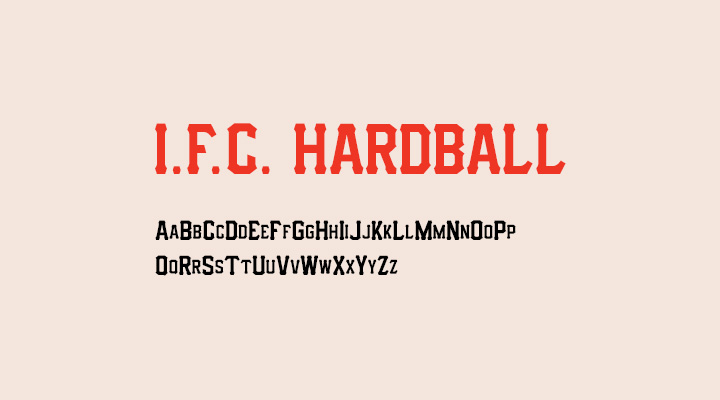

Buster Posey
Buster Posey is a retired Major League Baseball player. In 2011, he suffered a horrific season-ending injury that many thought would ruin his career. However, in 2012, he came back stronger than ever, and had one of the most remarkable seasons of all time. To pay tribute to this great season, I designed an infographic containing statistics and awards won from the campaign.
Visual Identity
I wanted to represent numerical data in multiple ways, implementing hierarchy, direction and line, and symbolism to make for an easy-to-understand graphic. It was important to narrow down which of the many baseball statistics to include to prevent an information-overload. The infographic is meant to appeal to an audience with basic understanding and exposure to basic baseball terms and statistics.
Typography
The San Francisco Giants, who Posey played his whole career for, use a distinct typeface throughout their logo, jersey names and numbers. I decided to use the same typeface for the infographic, to represent his ties to the team. It offers consistency and repetition, matching the text "SAN FRANCISCO" stitched across the chest of his jersey.
Colors

Like the typeface, the color scheme is familiar and aligned with the Giants' organization. When used together, the four colors allow for fantastic contrast, perfect for making information stand out on the page.

The large pointed shape at the top of the infographic represents home plate, where Posey resided for the majority of his career, playing catcher. A centered player image leaves space for large statistical numbers and categories displayed on the left, and bar-graphs of first and second-half splits of the same categories on the right. Both sides are connected with a horizontal bar giving the piece symmetrical balance. At the bottom, the design is rounded out with a list of accolades earned. A background of dirt is used to match the typical area surrounding home plate.